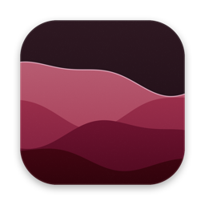
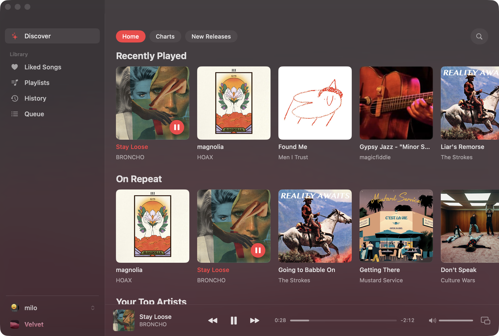

Your music, in a real Mac app.
Velvet plays YouTube Music in a fast, good-looking app made just for the Mac. Sign in once and everything is there — your playlists, your likes, your history.
Free. Needs macOS 15 or later.

It feels like it belongs on your Mac. Velvet is not a website in a window. It opens fast, stays light, and pages show up instantly.
Everything you already have is here. Your liked songs, playlists, listening history, charts, and new releases — the same account, the same music.
The music keeps going. Close the window and the song keeps playing. There is also a small always-on-top mini player you can drag anywhere.
Want something it does not do yet? Ask for it here — it takes a minute and every request gets read.